Temporal difference reinforcement learning#
Learning outcomes
The learning outcomes of this chapter are:
Identify situations in which model-free reinforcement learning is a suitable solution for an MDP.
Explain how model-free planning differs from model-based planning.
Apply temporal difference methods Q-learning and SARSA to solve small-scale MDP problems manually and program Q-learning and SARSA algorithms to solve medium-scale MDP problems automatically.
Compare and contrast off-policy reinforcement learning with on-policy reinforcement learning.
Model-based vs model-free#
Value iteration is part of a class of solutions known as model-based techniques. This means that we need to know the model; in particular, we have access to \(P_a(s' \mid s)\) and \(r(s,a,s')\).
In this section, we look at Q-learning and SARSA, which are model-free techniques. This means that we do NOT know \(P_a(s' \mid s)\) and \(r(s,a,s')\) of our model
How can we calculate a policy if we don’t know the transitions and the rewards?! We learn through experience by trying actions and seeing what the results is, making this machine learning problem.
Importantly, in model-free reinforcement learning, we do NOT try to learn \(P_a(s' \mid s)\) or \(r(s,a,s')\) — we learn a value function or a policy directly.
There is something in between model-based and model-free: simulation-based techniques. In these cases, we have a model as a simulator, so we can simulate \(P_a(s' \mid s)\) and \(r(s,a,s')\) and learn a policy with a model-free technique, but we cannot “see” \(P_a(s' \mid s)\) and \(r(s,a,s')\), so model-based techniques like value iteration are not possible.
Exercise – The Mystery game
Consider the following game, implemented by Github user guiferviz, and available for download at guiferviz/rl_udacity.
The aim of the game is to win the game. You have six actions available, which can be executed by pressing keys 1, 2, 3, 4, 5, and 6. You need to learn what the actions do and what the rewards are. No other instructions are given, but you will know when you receive any rewards/points. Try to play the game and see if you can win. Have fun!
Mystery Game by Github user guiferviz, used under the MIT License (MIT)
Once you have played this, ask yourself the following questions:
What was the process you took?
What did you learn?
What assumptions did you use?
I would guess that you experimented by pressing the keys 1 to 6, from the outcome of the keys, you learnt the effect of each of the keys, including the state transitions and the rewards. From this, you could easily construct a winning strategy. I also would guess that you perhaps used the colours as a way to guess what you should do.
This game is of interest because it is a model-free (at least initially) Markov decision process: you didn’t know the transition function or the reward function; instead you had to learn it. Similarly, model-free reinforcement learning techniques don’t know the transition function or the reward function of an MDP, so they just learn by trying different behaviours and observing what rewards they get. Over time, they learn which behaviours lead to positive rewards, so they reinforce the policy to try that behaviour more, and which behaviours lead to negative rewards, and they reinforce the policy to avoid that behaviour.
Imagine how hard it is for a computer that doesn’t have any assumptions or intuition for this game though! It will not match the colours, nor will it really have any prior knowledge about similar games, unless it is explicitly told about it. Model-free reinforcement learning techniques start with no or minimal initial knowledge, and will learn a policy (e.g. a value function, a Q-function, or a policy directly) just by trying behaviours and seeing what happens. Most techniques (at least the ones covered in these notes) do not learn a model in the same way that you did — they just construct the policy directly.
Intuition of model-free reinforcement learning#
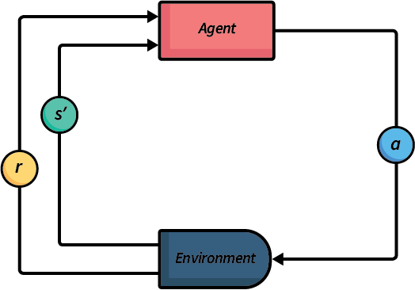
Fig. 4 An abstraction illustration of model-free reinforcement learning.#
There are many different techniques for model-free reinforcement learning, all with the same basis. Fig. 4 gives an abstract illustration of this process:
We execute many different episodes of the problem we want to solve in order to learn a policy.
During each episode, we loop between executing actions and learning our policy.
When our agent executes an action, we get a reward (which may be 0) and we can see the new state that results from executing the action.
From this, we reinforce our estimates of applying the previous action in the previous state.
Then, we select a new action and execute it in the environment.
We repeat this until either: (1) we run out of training time; (2) we have iterated over a fixed number of episodes or steps; (3) we think our policy has converged to an optimal policy; or (4) our policy is ‘good enough’ (for each new episode we see minimal improvement). In practice, it is difficult to know whether we have converged to an optimal policy.
Monte-Carlo reinforcement learning#
Monte-Carlo reinforcement learning is perhaps the simplest of reinforcement learning methods, and is based on how animals learn from their environment. The intuition is quite straightforward. Maintain a Q-function that records the value \(Q(s,a)\) for every state-action pair. At each step: (1) choose an action using a multi-armed bandit algorithm; (2) apply that action and receive the reward; and (3) update \(Q(s,a)\) based on that reward. Repeat over a number of episodes until …when?
It is called Monte-Carlo reinforcement learning after the area within within Monaco (small principality on the French riviera) called Monte Carlo, which is best known for its extravagant casinos. As gambling and casinos are largely associated with chance, simulations that use some randomness to explore actions are often called Monte Carlo methods.
Algorithm 3 (Monte-Carlo reinforcement learning)
\( \begin{array}{l} \alginput:\ \text{MDP}\ M = \langle S, s_0, A, P_a(s' \mid s), r(s,a,s')\rangle\\ \algoutput:\ \text{Q-function}\ Q\\[2mm] \text{Initialise}\ Q\ \text{arbitrarily; e.g.,}\ Q(s,a) \leftarrow 0\ \text{for all}\ s\ \text{and}\ a\\ N(s, a) \leftarrow 0\ \text{for all}\ s\ \text{and}\ a\\[2mm] \algrepeat \\ \quad\quad \text{Generate an episode}\ (s_0, a_0, r_1, \ldots, s_{T-1}, a_{T-1}, r_T);\\ \quad\quad\quad\quad \text{e.g. using}\ Q\ \text{and a multi-armed bandit algorithm such as}\ \epsilon\text{-greedy}\\ \quad\quad G \leftarrow 0\\ \quad\quad t \leftarrow T-1\\ \quad\quad \algwhile\ t \geq 0\ \algdo\\ \quad\quad\quad\quad G \leftarrow r_{t+1} + \gamma \cdot G\\ \quad\quad\quad\quad \algif\ s_t, a_t\ \text{does not appear in}\ s_0, a_0,\ldots, s_{t-1}, a_{t-1}\ \algthen\\ \quad\quad\quad\quad\quad\quad Q(s_t, a_t) \leftarrow Q(s_t, a_t) + \frac{1}{N(s_t, a_t)}[G - Q(s_t, a_t)]\\ \quad\quad\quad\quad\quad\quad N(s_t, a_t) \leftarrow N(s_t, a_t) + 1\\ \quad\quad\quad\quad t \leftarrow t-1\\ \alguntil\ Q\ \text{converges} \end{array} \)
This algorithm generates an entire episode following some policy, such \(\epsilon\)-greedy, observing the reward \(r_{t+1}\) at each step \(t\). It then calculates the discounted future reward \(G\) at each step. If \(s_t, a_t\) occurs earlier in the episode, then we do not update \(Q(s_t, a_t)\) as we will update it later in the loop. If it does not occur, we update \(Q(s_t, a_t)\) as the cumulative average over all executions of \(s_t, a_t\) over all episodes. In this algorithm \(N(s_t,a_t)\) represents the number of times that \(s_t, a_t\) have been evaluated over all episodes.
Q-Tables#
Q-tables are the simplest way to maintain a Q-function. They are a table with an entry for every \(Q(s,a)\). Thus, like value functions in value iteration, they do not scale to large state-spaces. (More on scaling in the next lecture).
Initially, we would have an arbitrary Q-table, which may look something like this if initialised with all zeros, taking the GridWorld example:
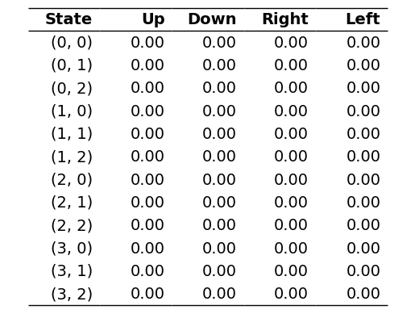
After some training, we may end up with a Q-function that looks something like this:
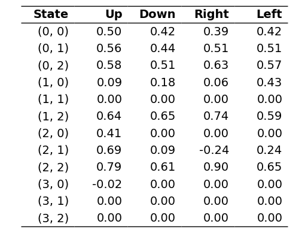
The following is an implementation of a Q-table using a Python dictionary:
import json
from collections import defaultdict
from mastering_rl.qfunctions.qfunction import QFunction
class QTable(QFunction):
def __init__(self, alpha=0.1, default_q_value=0.0):
self.default_q_value = default_q_value
self.qtable = defaultdict(lambda: self.default_q_value)
self.alpha = alpha
def update(self, state, action, delta):
self.qtable[(state, action)] = self.qtable[(state, action)] + self.alpha * delta
def batch_update(self, states, actions, deltas):
for state, action, delta in zip(states, actions, deltas):
self.update(state, action, delta)
def soft_update(self, policy_qfunction, tau=0.01):
for (state, action), q_value in policy_qfunction.qtable.items():
self.qtable[(state, action)] = (
tau * q_value + (1 - tau) * self.qtable[(state, action)]
)
def get_q_value(self, state, action):
return self.qtable[(state, action)]
def get_q_values(self, states, actions):
return [
self.get_q_value(state, action) for state, action in zip(states, actions)
]
def reset(self):
self.qtable = defaultdict(lambda: self.default_q_value)
def save(self, filename):
with open(filename, "w") as file:
serialised = {str(key): value for key, value in self.qtable.items()}
json.dump(serialised, file)
def load(self, filename, default=0.0):
with open(filename, "r") as file:
serialised = json.load(file)
self.qtable = defaultdict(
lambda: default,
{tuple(eval(key)): value for key, value in serialised.items()},
)
Temporal difference (TD) reinforcement learning#
Monte Carlo reinforcement learning is simple, but it has a number of problems. The most important is that it has high variance. Recall that we calculate the future discounted reward for an episode and use that to calculate the average reward for each state-action pair. However, the term \(\gamma G\) is often not a good estimate of the average future reward that we would receive. If we execute action \(a\) in state \(s\) many times throughout different episodes, we might find that the future trajectories we execute after that vary significantly because we are using Monte Carlo simulation. This means that it will take a long term to learn a good estimate of the true average reward is for that state-action pair.
Temporal difference (TD) methods alleviate this problem using bootstrapping. Much the same way that value iteration bootstraps by using the last iteration’s value function, in TD methods, instead of updating based on \(G\) – the actual future discounted reward received in the episode – we update based on the actual immediate reward received plus an estimate of our future discounted reward.
![An abstract illustration of temporal difference reinforcement learning. There are four boxes: environment, update Q-function, explore, and exploit, connected in a loop. From both explore and exploit to environment are arrows labelled with the letter a, representing the action being executed by the agent in the environment. This indicates that the action is either chosen as the best action, or a random action is selected. From the environment to update Q-function box are two arrows labelled with r and s-prime respectively, indicating the agent receiving the reward r and observing the new state s-prime.](../_images/td_learning_loop.png)
Fig. 5 An abstraction illustration of temporal-difference learning.#
In TD methods, our update rules always follow a pattern:
\(V(s')\) is our TD estimate of the average future reward, and is the bootstrapped value of our future discounted reward. The new information is weighted by a parameter \(\alpha \in [0,1]\) (pronounced “alpha”), which is the **learning rate(*. A higher learning rate \(\alpha\) will weight more recent information higher than older information, so will learn more quickly, but will make it more difficult to stabilise because it is strongly influenced by outliers.
The idea is that over time, the TD estimate will become be more stable than the actual rewards we receive in an episode, converging to the optimal value function \(V(s')\) defined by the Bellman equation, which leads to \(Q(s,a)\) converging more quickly.
Why is there the expression \(-Q(s,a)\) inside the square brackets? This is because the old value is weighted \((1 - \alpha) \cdot Q(s,a)\). We can expand this to \(Q(s,a) - \alpha \cdot Q(s,a)\), and can then move the latter \(-Q(s,a)\) inside the square brackets where the learning rate \(\alpha\) is applied.
In this chapter, we will look at two TD methods that differ in the way that they estimate the future reward \(V(s')\):
Q-learning, which is what we call an off-policy approach; and
SARSA, which is what we call an on-policy approach.
Q-Learning: Off-policy temporal-difference learning#
Q-learning is a foundational method for reinforcement learning. It is TD method that estimates the future reward \(V(s')\) using the Q-function itself, assuming that from state \(s'\), the best action (according to \(Q\)) will be executed at each state.
Below is the Q_learning algorithm. It uses \(\max_{a'} Q(s',a')\) as the estimate of \(V(s')\); that is, it estimates this by using \(Q\) to estimate the value of the best action from \(s'\). This helps to stabilise the learning.
Note that, unlike Monte Carlo reinforcement learning, because Q-learning uses the bootstrapped value, it can interleave execution and update, meaning that \(Q\) is improved at each step of an episode, rather than having to wait until the end of the episode to calculate \(G\). This has benefit early episodes benefit from learning more than in Monte Carlo reinforcement learning.
Algorithm 4 (Q-learning)
\( \begin{array}{l} \alginput:\ \text{MDP}\ M = \langle S, s_0, A, P_a(s' \mid s), r(s,a,s')\rangle\\ \algoutput:\ \text{Q-function}\ Q\\[2mm] \text{Initialise}\ Q\ \text{arbitrarily; e.g.,}\ Q(s,a) \leftarrow 0\ \text{for all}\ s\ \text{and}\ a\\[2mm] \algrepeat \\ \quad\quad s \leftarrow\ \text{the first state in episode}\ e\\ \quad\quad \algrepeat\ \text{(for each step in episode}\ e \text{)}\\ \quad\quad\quad\quad \text{Select action}\ a\ \text{to apply in}\ s;\\ \quad\quad\quad\quad\quad\quad \text{e.g. using}\ Q\ \text{and a multi-armed bandit algorithm such as}\ \epsilon\text{-greedy}\\ \quad\quad\quad\quad \text{Execute action}\ a\ \text{in state}\ s\\ \quad\quad\quad\quad \text{Observe reward}\ r\ \text{and new state}\ s'\\ \quad\quad\quad\quad \delta \leftarrow r + \gamma \cdot \max_{a'} Q(s',a') - Q(s,a)\\ \quad\quad\quad\quad Q(s,a) \leftarrow Q(s,a) + \alpha \cdot \delta\\ \quad\quad\quad\quad s \leftarrow s'\\ \quad\quad \alguntil\ s\ \text{is the last state of episode}\ e\ \text{(a terminal state)}\\ \alguntil\ Q\ \text{converges} \end{array} \)
Updating the Q-function#
Updating the Q-function is where the learning happens:
We can see that at each step, \(Q(s,a)\) is update by taking the old value of \(Q(s,a)\) and adding this to the new information.
The estimate from the new observations is given by \(\delta \leftarrow r + \gamma \cdot \max_{a'} Q(s',a')\), where \(\delta\) (pronounced “delta”) is the difference between the previous estimate and the most recent observation, \(r\) is the reward that was received by executing action \(a\) in state \(s\), and \(r + \gamma \cdot \max_{a'} Q(s',a')\) is the temporal difference target. What this says is that the estimate of \(Q(s,a)\) based on the new information is the reward \(r\), plus the estimated discounted future reward from being in state \(s'\). The definition of \(\delta\) is the update similar to that of the Bellman equation. We do not know \(P_a(s' \mid s)\), so we cannot calculate the Bellman update directly, but we can estimate the value using \(r\) and the temporal difference target.
Note
Note that we estimate the future value using \(\max_{a'} Q(s',a')\), which means it ignores the actual next action that will be executed, and instead updates based on the estimated best action for the update. This is known as off policy learning — more on this later.
Example – Q-learning update
Using the table above, we can illustrate the inner loop of the Q-learning algorithm. Assume that we are in state \(s=(2,2)\), and the action \(a=Up\) is chosen and executed successfully, which would return to state \(s'=(2,2)\) as there is no cell above (2,2). Using the Q-table above, we would update the Q-value as follows:
Theoretical guarantee
Using Q-tables to represent Q-functions, Q-learning will converge to the optimal policy under the assumption that all state-action pairs are sampled infinitely often.
Policy extraction using Q-functions#
Using model-free learning, we iterate over as many episodes as possible, or until each episode hardly improves our Q-values. This gives us a (close to) optimal Q-function.
Once we have such a Q-function, we stop exploring and just exploit. We use policy extraction, exactly as we do for value iteration, except we extract from the Q-function instead of the value function:
This selects the action with the maximum Q-value. Given an optimal Q-function (for the MDP), this results in optimal behaviour.
Implementation#
To implement Q-learning, we first implement an abstract superclass ModelFreeLearner that defines the interface for any model-free learning algorithm:
from abc import ABC, abstractmethod
class ModelFreeLearner(ABC):
@abstractmethod
def execute(self, episodes=2000):
pass
Next, we implement a second abstract superclass TemporalDifferenceLearner, which contains most of the code we need:
from abc import abstractmethod
from itertools import count
from mastering_rl.learners.model_free_learner import ModelFreeLearner
class TemporalDifferenceLearner(ModelFreeLearner):
def __init__(self, mdp, bandit, qfunction):
self.mdp = mdp
self.bandit = bandit
self.qfunction = qfunction
def execute(self, episodes=2000, max_episode_length=float("inf")):
episode_rewards = []
for episode in range(episodes):
state = self.mdp.get_initial_state()
actions = self.mdp.get_actions(state)
action = self.bandit.select(state, actions, self.qfunction)
episode_reward = 0.0
for step in count():
(next_state, reward, done) = self.mdp.execute(state, action)
actions = self.mdp.get_actions(next_state)
next_action = self.bandit.select(next_state, actions, self.qfunction)
delta = self.get_delta(
reward, state, action, next_state, next_action, done
)
self.qfunction.update(state, action, delta)
state = next_state
action = next_action
episode_reward += reward * (self.mdp.get_discount_factor() ** step)
if done or step == max_episode_length - 1:
break
episode_rewards.append(episode_reward)
return episode_rewards
def get_delta(self, reward, state, action, next_state, next_action, done):
q_value = self.qfunction.get_q_value(state, action)
next_state_value = self.state_value(next_state, next_action)
delta = (
reward
+ (self.mdp.get_discount_factor() * next_state_value * (1 - done))
- q_value
)
return delta
@abstractmethod
def state_value(self, state, action):
pass
Note a slight difference in the update from Algorithm 4 and the update in the code:
delta = reward + (self.mdp.discount_factor * next_state_value * (1 - done)) - q_value
The expression 1 - done will equal 1 if the episode has not finished, and 0 otherwise. Therefore, this update calculates that delta = reward - q_value at a terminal state – we do not need to estimate the value of the next state because there is no next state for a terminal state.
We will see later that we inherit from TemporalDifferenceLearner for other algorithms that are very similar to Q-learning.
We inherit from this class to implement the Q-learning algorithm:
from mastering_rl.learners.temporal_difference_learner import TemporalDifferenceLearner
class QLearning(TemporalDifferenceLearner):
def state_value(self, state, action):
max_q_value = self.qfunction.get_max_q(state, self.mdp.get_actions(state))
return max_q_value
We can see that the TemporalDifferenceLearner does most of the work. All the QLearning class has to do is define what the value of \(V(s')\) for the new state \(s'\), which the state and the next action that will be executed. Why does we model it like this instead of just implementing all of this in a single algorithm? In the next section on SARSA, we will see why.
Using this implementation, we execute 100 episodes on the GridWorld example, resulting in the following Q-function, where each cell represents a cell from the GridWorld example and the four entries correspond to the Q-values for the respective direction:
from mastering_rl.learners.qlearning import QLearning
from mastering_rl.markov_decision_processes.gridworld import GridWorld
from mastering_rl.multi_armed_bandit.epsilon_greedy import EpsilonGreedy
from mastering_rl.policies.q_policy import QPolicy
from mastering_rl.qfunctions.qtable import QTable
gridworld = GridWorld()
qfunction = QTable()
QLearning(gridworld, EpsilonGreedy(), qfunction).execute(episodes=100)
gridworld.visualise_q_function(qfunction, "Q-Function", grid_size=1.5)
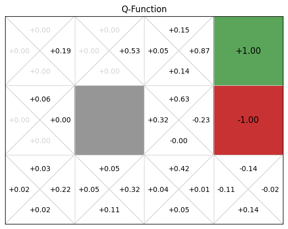
If we compare this to the value function for the value iteration implementation, we can see that the values learnt are not very accurate. Training for more episodes would result in more accurate values, but the alpha parameter means that recent information is weighted 0.1 in this case, and any unusual samples (from exploration or noise in the simulation), can affect the values.
Despite this, if we extract a policy from this, we still see that the policy corresponds to the optimal policy, although this is by no means guaranteed:
policy = QPolicy(qfunction)
gridworld.visualise_policy(policy)
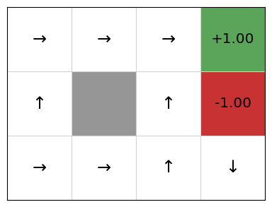
Below, we can explore how the Q-values for each state-action pair are learnt. If we play or step through the following visualisation, we can see that in early episodes, the Q-values that are learnt are not close to optimal because the initial episodes are quite long, so the discount factor means the rewards received are low. However, after just a few episodes, even these inaccurate Q-values give the multi-armed bandit some signal, and episodes start to become shorter, while the Q-values being learnt are updated to become more accurate:

SARSA: On-policy temporal difference learning#
SARSA (State-action-reward-state-action) is an on-policy reinforcement learning algorithm. It is very similar to Q-learning, except that in its update rule, instead of estimating the future discounted reward using \(\max_{a' \in A(s')} Q(s',a')\), it actually selects the next action that it will execute, and updates using that instead. Taking this approach is known as on-policy reinforcement learning. Later in this section, we’ll discuss why this matters, but for now, let’s look at the SARSA algorithm and on-policy learning a bit more.
Definition – On-policy and off-policy reinforcement learning
Instead of estimating \(Q(s',a')\) for the best estimated future state during update, on-policy reinforcement learning uses the actual next action to update.
On-policy learning estimates \(\mathcal{Q^{\pi}}(s,a)\) state action pairs, for the current behaviour policy \(\pi\), whereas off-policy learning estimates the policy independent of the current behaviour.
To illustrate how this differs, let’s take a look at the SARSA algorithm.
Algorithm 5 (SARSA)
\( \begin{array}{l} \alginput:\ \text{MDP}\ M = \langle S, s_0, A, P_a(s' \mid s), r(s,a,s')\rangle\\ \algoutput:\ \text{Q-function}\ Q\\[2mm] \text{Initialise}\ Q\ \text{arbitrarily; e.g.,}\ Q(s,a) \leftarrow 0\ \text{for all}\ s\ \text{and}\ a\\[2mm] \algrepeat \\ \quad\quad s \leftarrow\ \text{the first state in episode}\ e\\ \quad\quad \text{Select action}\ a\ \text{to apply in}\ s;\\ \quad\quad\quad\quad \text{e.g. using}\ Q\ \text{and a multi-armed bandit algorithm such as}\ \epsilon\text{-greedy}\\ \quad\quad \algrepeat\ \text{(for each step in episode}\ e \text{)}\\ \quad\quad\quad\quad \text{Execute action}\ a\ \text{in state}\ s\\ \quad\quad\quad\quad \text{Observe reward}\ r\ \text{and new state}\ s'\\ \quad\quad\quad\quad \text{Select action}\ a\ \text{to apply in}\ s';\\ \quad\quad\quad\quad\quad\quad \text{e.g. using}\ Q\ \text{and a multi-armed bandit algorithm such as}\ \epsilon\text{-greedy}\\ \quad\quad\quad\quad \delta \leftarrow r + \gamma \cdot Q(s',a') - Q(s,a)\\ \quad\quad\quad\quad Q(s,a) \leftarrow Q(s,a) + \alpha \cdot \delta\\ \quad\quad\quad\quad s \leftarrow s'\\ \quad\quad\quad\quad a \leftarrow a'\\ \quad\quad \alguntil\ s\ \text{is the last state of episode}\ e\ \text{(a terminal state)}\\ \alguntil\ Q\ \text{converges} \end{array} \)
The difference between the Q-learning and SARSA algorithms is what happens in the update in the loop body.
Q-learning: (1) selects an action \(a\); (2) takes that actions and observes the reward & next state \(s'\); and (3) updates optimistically by assuming the future reward is \(\max_{a'}Q(s',a')\) – that is, it assumes that future behaviour will be optimal (according to its policy).
SARSA: (1) selects action \(a'\) for the next loop iteration; (2) in the next iteration, takes that action and observes the reward & next state \(s'\); (3) only then chooses \(a'\) for the next iteration; and (4) updates using the estimate for the actual next action chosen – which may not be the greediest one (e.g. it could be selected so that it can explore).
So what difference does this really make? There are two main differences:
Q-learning will converge to the optimal policy irrelevant of the policy followed, because it is off-policy: it uses the greedy reward estimate in its update rather than following the policy such as \(\epsilon\)-greedy). Using a random policy, Q-learning will still converge to the optimal policy, but SARSA will not (necessarily).
Q-learning learns an optimal policy, but this can be ‘unsafe’ or risky during training.
Example – SARSA update
For this example, we will use the same Q-table as the earlier Q-learning example.
Assume that in state (2,2), the action ‘Up’ is chosen and executed successfully, which would return to state (2,2) there is no cell above (2,2). The next selected action is ‘Left’. Note that this is not the maximum action according to the Q-table – the selection function has explored instead of exploited. Using the Q-table above, we would update the Q-value using SARSA as follows:
Implementation#
As with the Q-learning agent, we inherit from the TemporalDifferenceLearner class to implement SARSA. But the value of the next state \(V(s')\) is calculated differently in the SARSA class:
from mastering_rl.learners.temporal_difference_learner import TemporalDifferenceLearner
class SARSA(TemporalDifferenceLearner):
def state_value(self, state, action):
return self.qfunction.get_q_value(state, action)
So, as we can see, the value of state is instead \(Q(s',a')\) instead of \(\max_{a \in A} Q(s,a)\).
As with Q-learning, we execute SARSA for 100 episodes:
from mastering_rl.markov_decision_processes.gridworld import GridWorld
from mastering_rl.multi_armed_bandit.epsilon_greedy import EpsilonGreedy
from mastering_rl.qfunctions.qtable import QTable
from mastering_rl.learners.sarsa import SARSA
gridworld = GridWorld()
qfunction = QTable()
SARSA(gridworld, EpsilonGreedy(), qfunction).execute(episodes=100)
gridworld.visualise_q_function(qfunction)
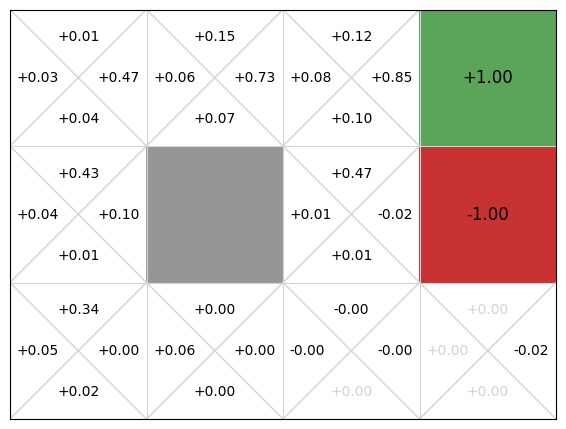
Again, we get an approximate Q-function. In this particular run, the policy is not optimal, because the action the policy selects from state (3,0) is down, not left, and the action from (2,0) is left, not up.
policy = QPolicy(qfunction)
gridworld.visualise_policy(policy)
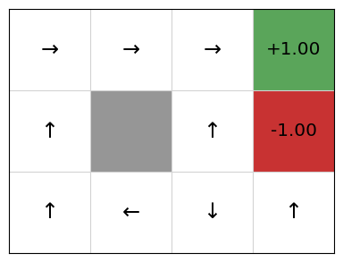
This is (probably!) not because the SARSA implementation, but is because of the randomness in exploration combined with the value of alpha being quite high. A high value of alpha will learn more quickly, but this will also weight later updates more, so any unlikely events occurring late in the training will result in inaccurate Q-values. By selecting a lower value of alpha and training for more episodes, we can increase the likelihood of resulting in an optimal policy. This will require more time and resources to compute. In an example like GridWorld, this is not an issue, but for larger systems, it could be.
SARSA vs. Q-learning example: Cliff world#
Consider the example below called “Cliff World”, which is taken from Chapter 6 of Sutton and Barto’s Introduction to Reinforcement Learning book (see further reading below). The bottom-left cell is the starting state and the bottom-right is the goal state, which receives a reward of 0. The four middle cells represent a cliff. Falling off the cliff receives a reward of -5. All other actions cost -0.05. Unlike the earlier GridWorld example, all actions are deterministic, which means that if the agent chooses to go to another cell, it will arrive at that cell with 100% probability. However, \(P_a(s' \mid s)\) is unknown to the learning agent.
from mastering_rl.markov_decision_processes.gridworld import CliffWorld
cliffworld = CliffWorld()
cliffworld_image = cliffworld.visualise()
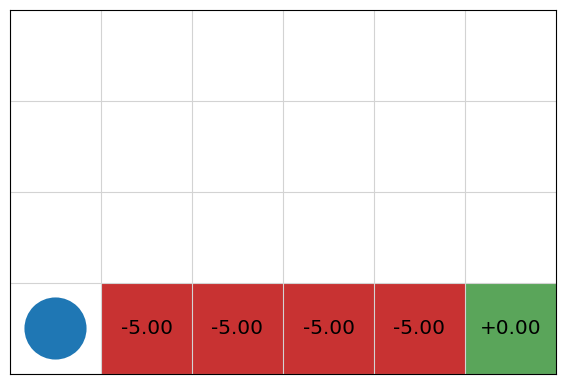
Let’s try training this with Q-learning for 2000 episodes, using an epsilon greedy strategy with epsilon = 0.2. The resulting Q-table is:
qfunction = QTable()
rewards = QLearning(cliffworld, EpsilonGreedy(epsilon=0.2), qfunction).execute(episodes=2000)
From this, we extract the following policy:
policy = QPolicy(qfunction)
cliffworld.visualise_policy(policy)
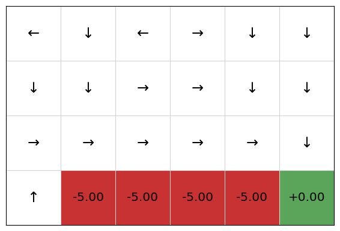
We can see that the policy will initially move the agent up, and then along the cliff, going down to the terminal state at the end, receiving the reward of 5. We can see that the policy (and Q-table) for the upper cells are somewhat inaccurate: because they are low value states, they have not been explored as much as the states along the cliff.
Now, let’s try training the same problem with SARSA:
cliffworld = CliffWorld()
qfunction = QTable()
rewards = SARSA(cliffworld, EpsilonGreedy(epsilon=0.2), qfunction).execute(episodes=2000)
Extracting the policy, we get:
policy = QPolicy(qfunction)
cliffworld.visualise_policy(policy)
We can see that SARSA will instead not go along the cliff, but will take a sub-optimal path that avoids the cliff. Why is this so?
The answer is because SARSA uses a reward from the actual next action that is executed. Even with a mature Q-function, with epsilon = 0.2 in the bandit used,, the actual next action with be an exploratory action with probability 0.2, which means some of the time, the next action chosen will be “down”, so the agent falls of the cliff.
Consider each agent moving from state \((1,1)\) to state \((2,1)\). The Q-learning agent will update its Q-value for the preceding action by assuming that the agent continues along the cliff path, including \(\max_{a \in A} Q(s,a)\) as the temporal difference reward. However, 10% of the time, the next action is NOT the optimal action because the agent will explore. Some of exploration actions will make the agent fall off the cliff, but this negative reward is not learnt by the Q-learning agent. The SARSA agent, on the other hand, selects its next action before the update, so in the cases where it chooses an action from state \((2,1)\) that falls off the cliff, the value \(Q(s',a')\) will include this negative reward. As a result, the SARSA agent learns that staying close to the cliff is a “risky” behaviour, so will learn to instead take the safe path away from the cliff: exploring from the safe path does not result in a strong negative reward. As such, the SARSA agent will fall off the cliff less than the Q-learning agent during training.
However, during learning, the agent will still fall off the cliff sometimes when the agent is exploring actions. If trained using SARSA, the the result will be a sub-optimal policy that learns the safe path. The SARSA learning agent will still fall off the cliff sometimes when exploring actions, however, it will fall off less than the Q-learning agent because it takes actions on the safe path more often during learning?
Consider the following in which we run both Q-learning and SARSA for 2000 episodes using epsilon greedy with epsilon = 0.2. Then, we take the resulting Q-function and run another 2000 episodes following the policy (which is equivalent to using an epsilon greedy strategy with epsilon = 0.0, initialising with the trained Q-function. If we plot the rewards for each episode for both SARSA and Q-Learning, we can see that SARSA receives more rewards the more we train, but at 2000 episodes when we start using the policy, Q-learning receives a higher reward per episode:
from mastering_rl.markov_decision_processes.gridworld import CliffWorld
from mastering_rl.tests.compare_convergence_curves import qlearning_vs_sarsa
mdp_q = CliffWorld()
mdp_s = CliffWorld()
qlearning_vs_sarsa(mdp_q, mdp_s, episodes=1000)
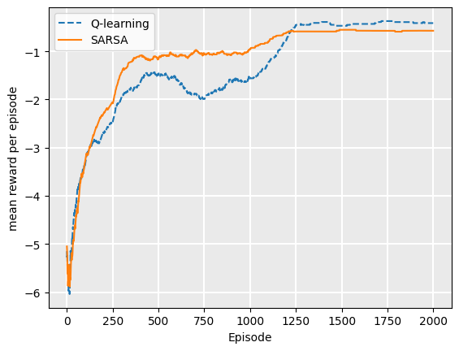
During training, SARSA receives a higher average reward per episode than Q-Learning, because it falls off the cliff less as its policy improves. The Q-learning agent will follow the path along the cliff, but fall off when it explores, meaning that the average reward is lower. However, Q-learning learns the optimal policy, meaning that once we extract the policy, its rewards will be higher on average.
How is it possible that on-policy learning has a sub-optimal policy but higher rewards during training?
Consider a case of two agents training: one with Q-learning and one with SARSA, both using \(\epsilon\)-greedy with epsilon=0.2. Then, consider training episode 100 for each agent. From the plot above, we can see that both policies are close to converged.
However, once training is complete, we extract a policy. Because the actions are deterministic, the Q-learning policy is optimal: it will follow the path next to the cliff, but will not fall off. The SARSA agent will follow the safe path, but this safety is no longer required because no exploration is done.
The end result for the SARSA (on policy) method is a sub-optimal policy, but one that achieves stronger rewards during training.
SARSA vs. Q-learning example: Contested crossing#
What happens when we train on a more complicated example?
In a game such as the Contested Crossing example, the addition of even a small number of extra actions and outcomes has a significant effect on the ability of both Q-learning and SARSA to find a good policy.
In the example of CliffWorld, multiple runs of the algorithm above (train for n episodes then test for n episodes) produce a stable optimal policy for when n is about 500. If we go through the procedure of training and testing for both Q-learning and SARSA multiple times, the final policy gives close to the same output each time.
In the case of Contested Crossing, there are seven actions available (compared to four for CliffWorld), the number of steps taken in executing the policy is somewhere between 6 and around 20 depending on the amount of damage the ship takes (compared to 7 for CliffWorld using Q-learning and 9 using SARSA) and the amount of chance involved is significantly higher, because a ship can shoot or be shot at any time within the danger zones, with medium or high probability.
The result of this is to considerably increase the amount of time taken to converge towards a good policy, for either Q-learning or SARSA. For \(n=2000\), the policy found by Q-learning is usually – but not always – superior to that found by SARSA. This is insufficient training for either algorithm to converge on an optimal policy.
At \(n=20,000\), a good policy for Q-learning appears to have been found. There is still variation in the reward generated from implementing it, because of the high amount of chance in the Contested Crossing task. The SARSA policies at \(n=20,000\) does not do so well because of it’s on-policy nature, but it is still quite good.
from mastering_rl.markov_decision_processes.contested_crossing import ContestedCrossing
from mastering_rl.tests.compare_convergence_curves import qlearning_vs_sarsa
mdp_q = ContestedCrossing()
mdp_s = ContestedCrossing()
qlearning_vs_sarsa(mdp_q, mdp_s, episodes=2000)
mdp_q = ContestedCrossing()
mdp_s = ContestedCrossing()
qlearning_vs_sarsa(mdp_q, mdp_s, episodes=20000)
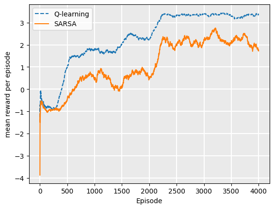
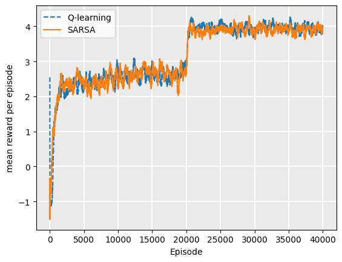
On-policy vs. off-policy: Why do we have both?#
There are a few reasons why we have both on-policy and off-policy learning.
Learning from prior experience#
The main advantage of off-policy approaches is that they can use samples from sources other than their own policy. For example, off-policy agents can be given a set of episodes of behaviour from another agent, such as a human expert, and can learn a policy by demonstration. In Q-learning, this would mean instead of selecting action \(a\) to apply in state \(s\) using a multi-armed bandit algorithm on \(Q(s,a)\), we can simply take the next action of a trajectory and then update \(Q\) as before. The policy that we are trying to learn is independent of the samples in the episodes. However, with SARSA, while we could in theory sample the same way, the update rule explicitly uses \(Q(s',a')\), so the policy used to generate the trajectories in episodes is the same as the policy being learnt.
Learning on the job#
The main advantage of on-policy approaches is that they are useful for ‘learning on the job’, meaning that it is better for cases in which we want an agent to learn optimal behaviour while operating in its environment.
For example, imagine a reinforcement learning agent that manages resources for a cloud-based platform and we have no prior data to inform a policy. We could program a simulator for this environment, but it is highly unlikely that the simulator would be an accurate reflection of the real world, as estimating the number of jobs, their lengths, their timing, etc., would be difficult without prior data. So, the only way to learn a policy is to get data from our cloud platform while it operates.
As such, if the average reward per episode is better using on-policy, this would give us better overall outcomes than off-policy learning, because the episodes are not practice – they actually influence real rewards, such as throughput, downtime, etc., and ultimately profit.
If we could run our reinforcement learning algorithm in a simulated environment before deploying (and we had reason to believe that simulated environment was accurate), off-policy learning may be better because its optimal policy could be followed.
Combining off-policy and on-policy learning#
We can combine the two approaches for particular applications. For example, if we use take our cloud platform from above, it would be silly to start with a random policy. We would quickly lose customers as the scheduling etc., would be terrible.
A better approach would be to hand-craft an algorithm that gave good results initially, and use this with an off-policy approach to train a good initial policy. We could use the hand-crafted algorithm to select actions for training initially to gain an initial policy.
However, this new policy will merely mimic the hand-crafted algorithm. Presumably we are using reinforcement learning because the problem is so complex that a hand-crafted approach is not good enough. So, we can then take the policy trained using off-policy and optimise it further using on-policy learning.
Another common place for combining off-policy and on-policy learning is when we have an existing approach and we can use data from this with an off-policy approach to come up with an initial policy, which can be refined using on-policy.
Evaluation and termination#
How do we know how many episodes we should train a model-free learning algorithm for?
With value iteration, we terminate the algorithm once the improvement in value function reaches some threshold. However, in the model-free environment, we are not aiming to learn a complete policy – only enough to get us from the initial state to an absorbing state; or, in the case of an infinite MDP, to maximise rewards. Due to the randomness of the exploration and the fact that an episode may visit a state it has rarely visited, it is likely that for each episode, a Q-value of at least one state-action pair changes.
With model-free learning, we can instead evaluate the policy directly by executing it and recording the reward we receive. Then, we terminate when the policy has reached convergence. By convergence, we mean that the average cumulative reward of the policy is no longer increasing during learning.
There are a few ways we can measure this:
We can simply record the reward received during each episode of learning, and monitor how much this is increasing. The weakness with this is that a single episode can be noisy due to the exploration parameter used to select actions and the stochastic nature of the MDP. For example, if we use a multi-armed bandit to control exploration vs. exploitation during learning, then at each step, we choose a random action with probability \(\epsilon\). This means that we are not evaluating our real policy — we are evaluating our really policy plus some random actions.
We can pause our learning every now and then, and run our actual policy on the MDP. The strength of this is that we avoid randomness in action selection. However, we still have randomness caused by the stochastic nature of the MDP. The weakness is that it requires us to run more episodes; or more accurately, we are executing episodes and not learning from them.
To avoid stochasticity in both the environment and the exploration strategy, we can average the reward over a number of simulations. The weakness is that this is more costly – it requires us to run additional episodes that do not explore and learn.
In these notes, we use the strategy in item 2 above. Every 20 episodes, we run our policy and record the cumulative reward. As we don’t know what the maximum reward could be, we monitor the learning and terminate when the exponential moving average of our reward is no longer increasing, similar to what we did in evaluating the value iteration policy. Here, we plot the learning curve for Q-learning on the GridWorld example:
qfunction = QTable()
mdp = GridWorld()
rewards = QLearning(mdp, EpsilonGreedy(), qfunction).execute(episodes=2000)
Once we have the rewards of the episodes, we can plot the rewards:
from mastering_rl.tests.plot import Plot
Plot.plot_cumulative_rewards(["Q-learning"], [rewards], smoothing_factor=0.99)
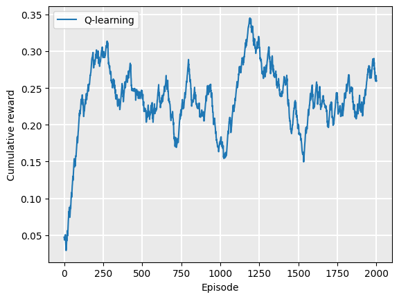
We can see that the policy converges quickly, however, there is still quite a bit of volatility as some episodes get a poor reward due to the randomness in the action selection during exploration.
Next, we do the same for the contested crossing example:
qfunction = QTable()
mdp = ContestedCrossing()
rewards = QLearning(mdp, EpsilonGreedy(), qfunction).execute(episodes=2000)
Plot.plot_cumulative_rewards(["Q-learning"], [rewards], smoothing_factor=0.99)
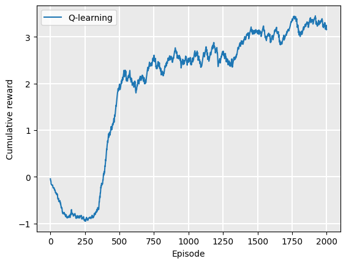
Limitations of Q-learning and SARSA#
The standard versions that we see in this section have two major limitations:
Because we need to select the best action \(a\) in Q-learning, we iterate over all actions. This limits Q-learning to discrete action spaces.
If we use a Q-table to represent our Q-function, both state spaces and action spaces must be discrete, and further, they must be modest in size or the Q-table will become too large to fit into memory or at least so large that it will take many episodes to sample all state-action pairs.
Applications of Reinforcement Learning#
Checkers (Samuel, 1959): first use of RL in an interesting real game
(Inverted) Helicopter Flight (Ng et al. 2004), better than any human
Computer Go (AlphaGo 2016): AlphaGo beats Go world champion Lee Sedol 4:1
Atari 2600 Games (DQN & Blob-PROST 2015): human-level performance on half of 50+ games
Robocup Soccer Teams (Stone & Veloso, Reidmiller et al.): World’s best player of simulated soccer, 1999; Runner-up 2000
Inventory Management (Van Roy, Bertsekas, Lee & Tsitsiklis): 10-15% improvement over industry standard methods
Dynamic Channel Assignment (Singh & Bertsekas, Nie & Haykin): World’s best assigner of radio channels to mobile telephone calls
TD-Gammon and Jellyfish (Tesauro, Dahl): World’s best backgammon player. Grandmaster level
Takeaways#
Takeaways
On-policy reinforcement learning uses the action chosen by the policy for the update.
Off-policy reinforcement learning assumes that the next action chosen is the action that has the maximum Q-value, but this may not be the case because with some probability the algorithm will explore instead of exploit.
Q-Learning (off-policy) does it relative to the greedy policy.
SARSA (on-policy) learns action values relative to the policy it follows.
If we know the MDP, we can use model-based techniques:
Offline: Value Iteration
Online: Monte Carlo Tree Search and friends.
We can also use model-free techniques if we know the MDP model: we just sample transitions and observe rewards from the model.
If we do not know MDP, we need to use model-free techniques:
Offline: Q-learning, SARSA, and friends.